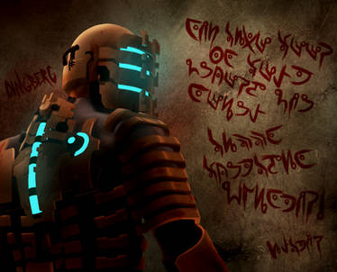
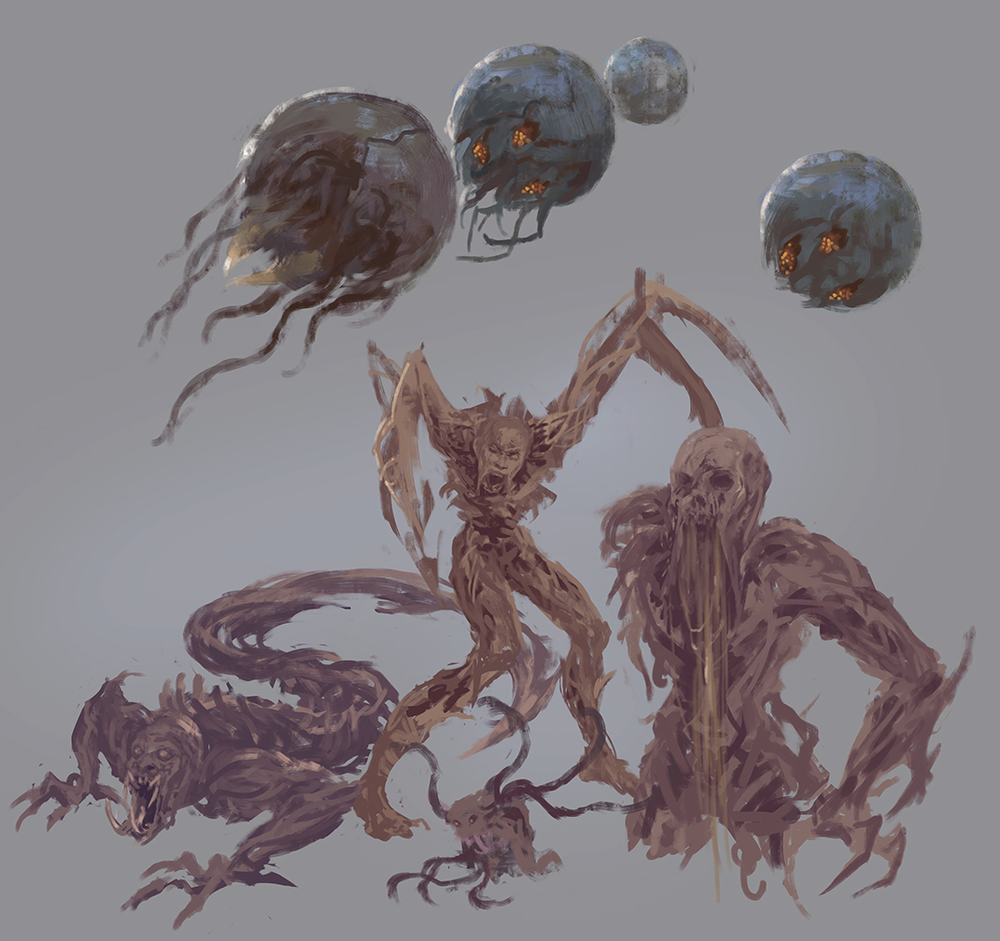

Dead Space is a horror game that came out on October 13, 2008. It was widely popular for its intense gameplay and unique story. It did a great job with sales and has been heralded as one of the best games ever made. This is mainly because of the thick atmosphere throughout and quite gory gameplay.
The main character in Dead Space goes by the name of Isaac Clarke. He is 47 years old and weighs 237 lbs. He is unnaturally strong for his age and weight. He chose to go on this mission in hopes of reuniting with Nicole who was his girlfriend. He is quite the silent man which is one of the main reasons people love his character so much. With a character they can relate to and the fact that the only noises he makes are screams and grunts make the situation more realistic and entertaining as you're less focused on the character and more focused on the environment and other people. With his stoic personality and quiet demeanor people can connect with him and put themselves in his shoes.
The main ship that main events take place on is called the USG Ishimura. It is known as a "planet-cracker" mining ship. It Launched into space on March 7th, 2446. It started with about 1,000 members on board. It was quite the dangerous ship with very little regard for the safety of the families and workers on board. This is one of the main reasons why the ship was infected and pretty much everyone died. This is also why you don't find dead bodies everywhere, as they have all been horribly mutilated or are just gone.

The monsters arrived on the ship via being brought to the ship on a rock known as "The Marker''. The monsters in this game are all based upon this SUPER special rock. It messes with people's heads and makes people go crazy and psychotic. It also releases special enzymes and other biological nastiness that causes infections. It starts small and slowly deforms people into terrifying monsters with different abilities and unique characteristics. Unfortunately it is quite deadly and it is the reason why the ship fell apart so quickly. Here is some early concept art of these beings.
